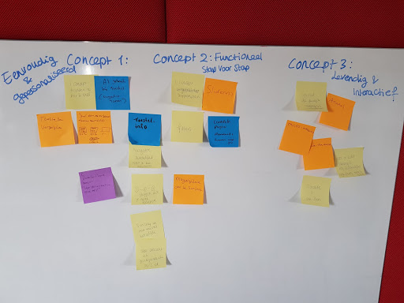
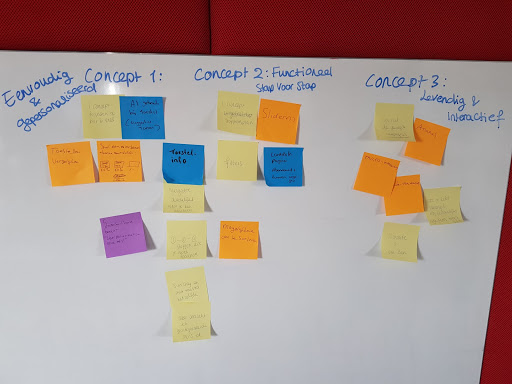
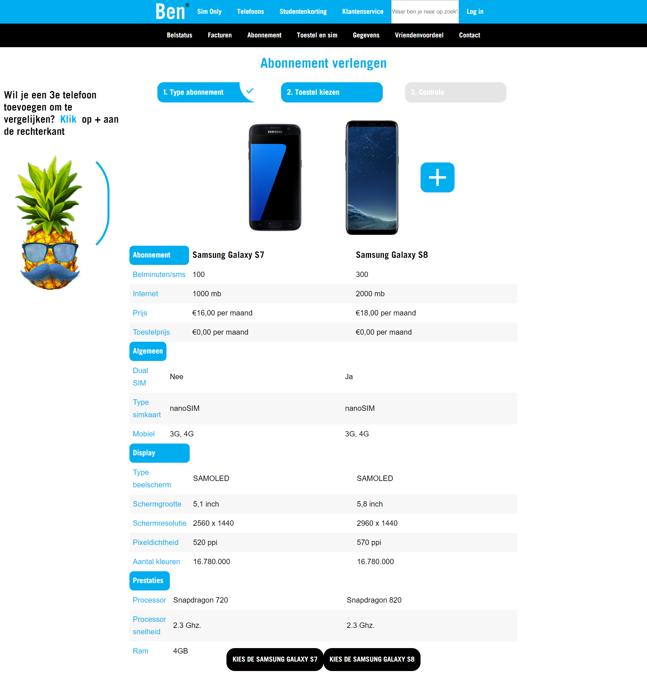
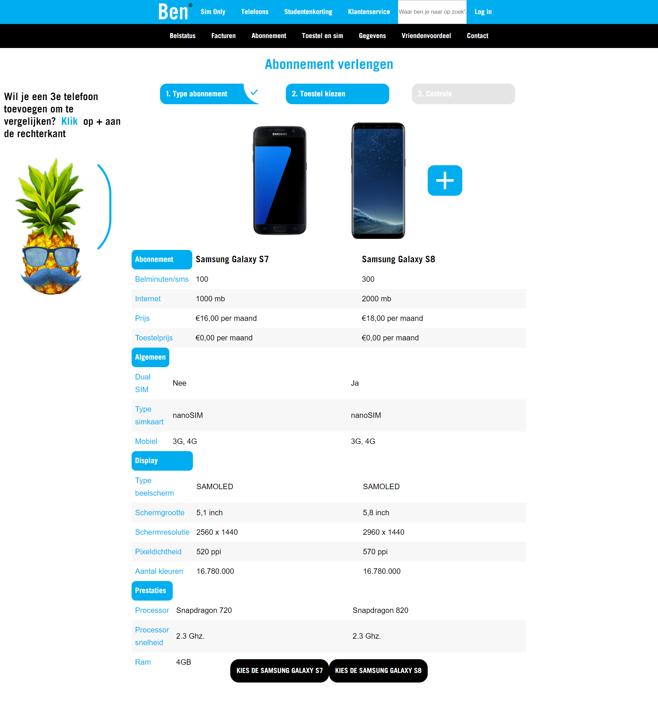

Research
Ben is een telecombedrijf dat gebruik maakt van het netwerk van T-mobile. Het bedrijf bestaat sinds 1999. Bij Ben staan de merkwaarden persoonlijk, eenvoudig en kostenbewust centraal. Zo kunnen verschillende mobiele abonnementen worden afgesloten of verlengd. Ben richt zich vooral op startende gebruikers en gebruikers die reeds twee jaar een mobiel abonnement hebben. Het verlengen is sinds de oprichting niet meer geëvalueerd. Naast de usability test hebben we een co-creatie sessie gehouden op het kantoor van ben met drie werknemers en twee gebruikers. Het doel van deze sessie was om samen met de opdrachtgever te kijken naar het huidige verlengproces en te kijken naar mogelijke verbeterpunten.
Concepting
Het huidig verlengproces bestond uit 5 stappen. Tijdens de co-creatie hebben wij al deze stappen doorlopen en hebben we aan de medewerkers en gebruikers gevraagd om elke stap te beoordelen.

Met deze nieuwe inzichten zijn we ons gaan richten op het creëren van de concepten. Door als groep te brainstormen met de resultaten van de co-creatie, zijn we tot drie concepten gekomen. Het eerste concept richt zich voornamelijk op een gepersonaliseerde ervaring, bijvoorbeeld door persoonlijke deals te krijgen die bij je abonnement passen. Het tweede concept forcust zich op het functioneel verbeteren van het huidige proces. Tenslotte wilden we met het derde concept meer leven blazen in het verlengproces, mede met een mascotte die de gebruiker aanmoedigt.
 



 
